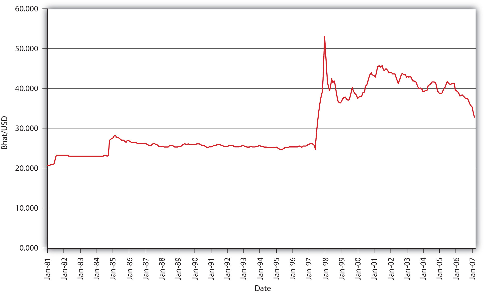
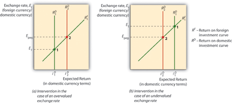

The so-called managed float (aka dirty float) is perhaps the most interesting attempt to, if not eliminate the impossible trinity, at least to blunt its most pernicious characteristic, that of locking countries into the disadvantages outlined in Figure 19.2 "Strengths and weaknesses of international monetary regimes". Under a managed float, the central bank allows market forces to determine second-to-second (day-to-day) fluctuations in exchange rates but intervenes if the currency grows too weak or too strong. In other words, it tries to keep the exchange rate range bound, ostensibly to protect domestic economic interests (exporters, consumers) who would be hurt by rapid exchange rate movements. Those ranges or bands can vary in size from very wide to very narrow and can change levels over time.
Central banks intervene in the foreign exchange markets by exchanging international reserves, assets denominated in foreign currencies, gold, and special drawing rights (SDRsLiabilities of the International Monetary Fund (IMF), an institution established as part of the BWS.), for domestic currency. Consider the case of Central Bank selling $10 billion of international reserves, thereby soaking up $10 billion of MB (the monetary base, or currency in circulation and/or reserves). The T-account would be:
| Central Bank | |
|---|---|
| Assets | Liabilities |
| International reserves −$10 billion | Currency in circulation or reserves −$10 billion |
If it were to buy $100 million of international reserves, both MB and its holdings of foreign assets would increase:
| Central Bank | |
|---|---|
| Assets | Liabilities |
| International reserves +$100 million | Monetary base +$100 million |
Such transactions are known in the biz as unsterilized foreign exchange interventions and they influence the FX rate via changes in MB. Recall that increasing the money supply (MS) causes the domestic currency to depreciate, while decreasing the MS causes it to appreciate. It does so by influencing both the domestic interest rate (nominal) and expectations about Eef, the future exchange rate, via price level (inflation) expectations. (There is also a direct effect on the MS, but it is too small in most instances to be detectable and so it can be safely ignored. Intuitively, however, increasing the money supply leaves each unit of currency less valuable, while decreasing it renders each unit more valuable.)
Central banks also sometimes engage in so-called sterilized foreign exchange interventions when they offset the purchase or sale of international reserves with a domestic sale or purchase. For example, a central bank might offset or sterilize the purchase of $100 million of international reserves by selling $100 million of domestic government bonds, or vice versa. In terms of a T-account:
| Central Bank | |
|---|---|
| Assets | Liabilities |
| International reserves +$100 million | Monetary base +$100 million |
| Government bonds −$100 million | Monetary base −$100 million |
Because there is no net change in MB, a sterilized intervention should have no long-term impact on the exchange rate. Apparently, central bankers engage in sterilized interventions as a short-term ruse (where central banks are not transparent, considerable asymmetric information exists between them and the markets) or to signal their desire to the market. Neither go very far, so for the most part central banks that wish to manage their nation’s exchange rate must do so via unsterilized interventions, buying international reserves with domestic currency when they want to depreciate the domestic currency, and selling international reserves for domestic currency when they want the domestic currency to appreciate.
The degree of float management can range from a hard peg, where a country tries to keep its currency fixed to another, so-called anchor currency, to such wide bands that intervention is rarely undertaken. Figure 19.5 "Thai bhat–USD exchange rate, 1981–2007" clearly shows that Thailand used to maintain a hard peg against the dollar but gave it up during the Southeast Asian financial crisis of 1997. That big spike was not pleasant for Thailand, especially for economic agents within it that had debts denominated in foreign currencies, which suddenly became much more difficult to repay. (In June 1997, it took only about 25 baht to purchase a dollar. By the end of that year, it took over 50 baht to do so.) Clearly, a major downside of maintaining a hard peg or even a tight band is that it simply is not always possible for the central bank to maintain or defend the peg or band. It can run out of international reserves in a fruitless attempt to prevent a depreciation (cause an appreciation). Or maintenance of the peg might require increasing or decreasing the MB counter to the needs of the domestic economy.
Figure 19.5 Thai bhat–USD exchange rate, 1981–2007
Figure 19.6 Intervening in the FX market under a fixed exchange rate regime
A graph, like the one in Figure 19.6 "Intervening in the FX market under a fixed exchange rate regime", might be useful here. When the market exchange rate (E1) is equal to the fixed, pegged, or desired central bank rate (Epeg) everything is hunky dory. When a currency is overvalued (by the central bank), which is to say that E1 is less than Epeg (measuring E as foreign currency/domestic currency), the central bank must soak up domestic currency by selling international reserves (foreign assets). When a currency is undervalued (by the central bank), which is to say that when E1 is higher than Epeg, the central bank must sell domestic currency, thereby gaining international reserves.
In 1990, interest rates rose in Germany due to West Germany’s reunification with formerly communist East Germany. (When exchange rates are fixed, the interest parity condition collapses to iD = iF because Eef = Et.) Therefore, interest rates also rose in the other countries in the ERM, including France, leading to a slowing of economic growth there. The same problem could recur in the new European currency union or euro zone if part of the zone needs a high interest rate to stave off inflation while another needs a low interest rate to stoke employment and growth. What does this analysis mean for the likelihood of creating a single world currency?
It means that the creation of a world currency is not likely anytime soon. As the European Union has discovered, a common currency has certain advantages, like the savings from not having to convert one currency into another or worry about the current or future exchange rate (because there is none). At the same time, however, the currency union has reminded the world that there is no such thing as a free lunch, that every benefit comes with a cost. The cost in this case is that the larger the common currency area becomes, the more difficult it is for the central bank to implement policies beneficial to the entire currency union. It was for that very reason that Great Britain opted out of the euro.